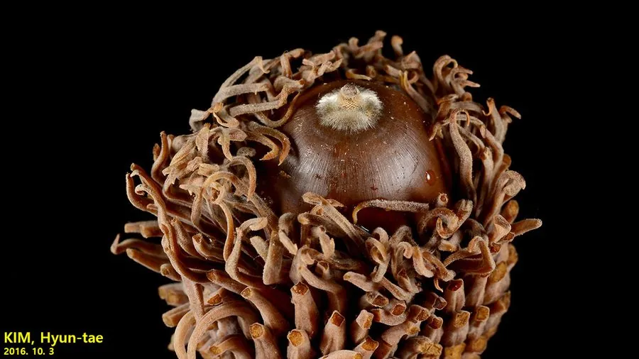

乔木 · 植物界
栓皮栎 Quercus variabilis

树皮可采割软木的落叶乔木，是中国重要的软木资源树种，木材与栓皮兼用，广泛分布于南方山地，经济价值较高。
- 分类
- 门被子植物门纲木兰纲目壳斗目科壳斗科属栎属
- 栖息环境
- 海拔 2000 米以下的山坡、丘陵与沟谷，喜光耐旱耐瘠薄
- 地理分布
- 中国华北、西北至华南、西南山地，朝鲜半岛、日本也有分布
- 保护级别
- 暂无评估；中国未列入国家重点保护野生植物名录
物种志
栓皮栎为落叶乔木，高可达 30 m，树皮灰褐色、深纵裂，木栓层发达而质软，是采割软木的原料；叶片长椭圆状披针形，边缘具刺芒状锯齿，叶背密被灰白色星状毛。雌雄同株，雄花序下垂，雌花序短；壳斗杯形，苞片钻形、反曲，坚果近球形或卵圆形，长 1.5–2 cm。
栓皮栎分布于中国华北、西北至华南、西南的丘陵山地，喜光、耐旱、耐瘠薄，适应性强，常成片生长于山坡与沟谷，是中国重要的软木资源树种。树皮木栓层可采割制成软木砖、瓶塞与隔音材料，采割后能够再生；木材坚硬，可供建筑、家具与车辆用；壳斗与树皮含单宁，可提取栲胶；种子可酿酒或作饲料。栓皮栎根系发达，也是水土保持与荒山造林的优良树种。
形态与习性
- 株高可达 30 m，树皮木栓层发达
- 花期4 月，雄花序下垂
- 果期翌年 9–10 月，坚果近球形
- 光照喜光，不耐庇荫
- 水分耐旱，怕积水
- 土壤适应性强，耐瘠薄
- 主要用途采割软木、建筑与家具用材、壳斗提取栲胶
趣味知识
- 栓皮栎树皮外表有一层厚厚的木栓层，就是制作软木塞与隔音板的原料。
- 软木采割后树皮能重新长出，一般每隔 9 年左右可再次采割。
- 栓皮栎的坚果近球形，壳斗苞片反曲，是栎类中较易辨认的一种。
- 栓皮栎耐干旱瘠薄，根系发达，是荒山造林与水土保持的优良树种。